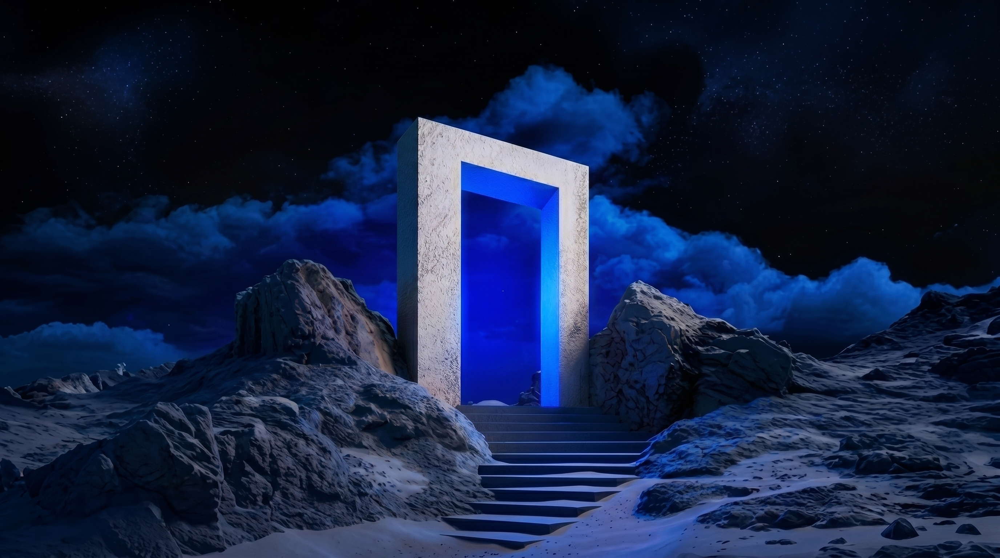
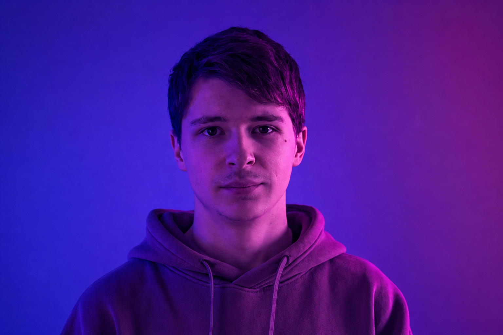

Ouvrez la porte à de
nouvelles expériences
Créer des produits, de l'idée à l'interface
Scroll
À propos

Je m'appelle Valentin Watterlot, designer qui se concentre sur le web design et l'identité visuelle. Mon portfolio présente mes différents travaux effectués au sein de mon école et en entreprise.
En savoir plusMes projets
UNE SÉLECTION DE PROJETS CENTRÉS SUR L'UTILISATEUR ET CONÇUS POUR RÉPONDRE À DES BESOINS RÉELS.

Commencer le voyage
Basé en France